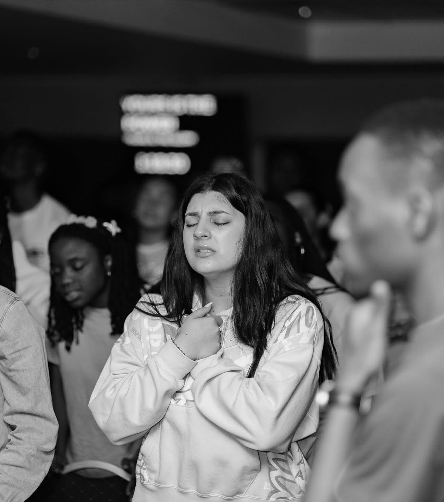
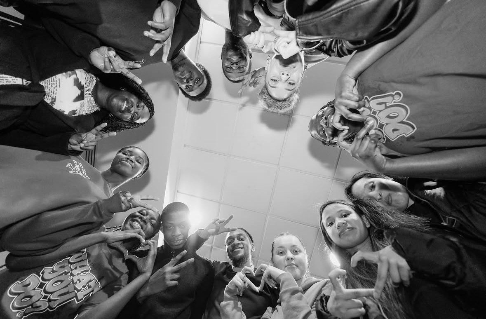
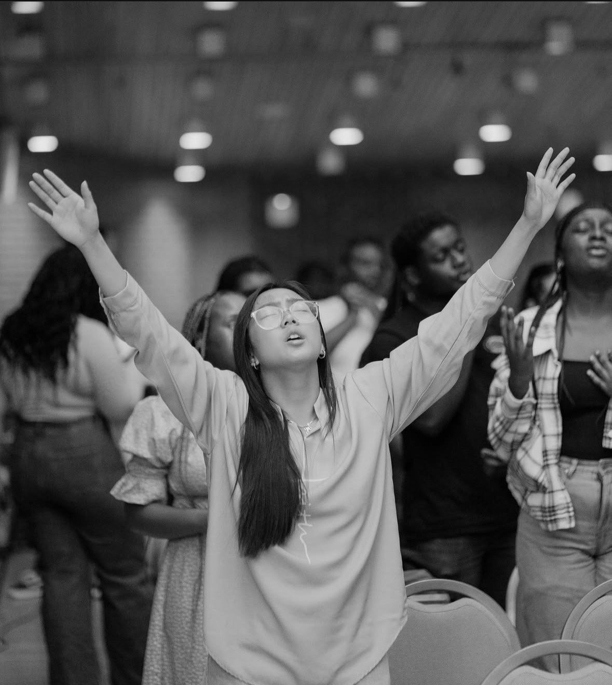

About
Who we are
Who we are
The church on campus.
First Love Church is the church on campus at George Mason University: students and recent graduates who have come to know God, gathering every week to worship, to hear the Word and to pray for one another.
We carry one vision. We tell everyone on this campus about Jesus, and wherever our people go after Mason, a church can begin there too.
Win the lost at any cost.


Values
What we hold to.
Love
We love God first, and we love people the way he loves us.
Know God
Everything we do is meant to help people come to know God for themselves.
Church
The church is a family that gathers, prays and serves together, every week.
Community
Nobody is anonymous here; we know each other by name.
Telling others
We tell people about Jesus.

Beliefs
What we believe.
The Bible
The Bible is the Word of God: true, trustworthy, and the authority for what we believe and how we live.
All scripture is given by inspiration of God, and is profitable for doctrine, for reproof, for correction, for instruction in righteousness:
2 Timothy 3:16
God
There is one God: Father, Son and Holy Spirit.
Go ye therefore, and teach all nations, baptizing them in the name of the Father, and of the Son, and of the Holy Ghost:
Matthew 28:19
Jesus
Jesus Christ is the Son of God. He died for our sins and rose again.
For I delivered unto you first of all that which I also received, how that Christ died for our sins according to the scriptures; And that he was buried, and that he rose again the third day according to the scriptures:
1 Corinthians 15:3–4
Salvation
Anyone who believes in Jesus is saved by grace, as a gift, not by what they do.
For by grace are ye saved through faith; and that not of yourselves: it is the gift of God: Not of works, lest any man should boast.
Ephesians 2:8–9
The Holy Spirit
The Holy Spirit lives in those who believe, and gives them power to live for God and to tell others.
But ye shall receive power, after that the Holy Ghost is come upon you: and ye shall be witnesses unto me both in Jerusalem, and in all Judaea, and in Samaria, and unto the uttermost part of the earth.
Acts 1:8
The Church
The church belongs to Jesus. He builds it, and he sends it into the whole world.
And I say also unto thee, That thou art Peter, and upon this rock I will build my church; and the gates of hell shall not prevail against it.
Matthew 16:18
This is the good news we were given, and the good news we tell.
Questions